| 日付 | 2021年5月9日（日） |
|---|---|
| 山域 | 御坂･天子山塊 |
| メンバー | 家族（妻、長女・10歳、長男・7歳） |
| 山行形態 | 子連れ日帰り |
| アクセス | 車 |
| ルート (Map) | いこいの森駐車場 (8:19) - (10:28) 八十八大師 - (11:18) 三ツ峠山 (12:17) - (14:00) いこいの森駐車場 |
今週3度目の山行。ちょっと疲れているが晴予報のため行くことにする。
行先は4度目の三ツ峠山。と言っても訪問は9年振りで久々だ。
今回は初めて三ツ峠山に登った時に歩いた道と同じ道を登る。
いこいの森駐車場に到着。標高850m。
すでに車は停まっているが、数は多くない。
遠くに三ツ峠山の山頂部が見えている。
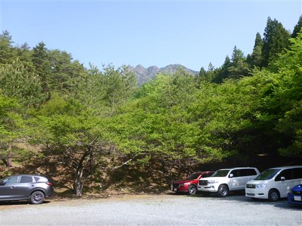
この辺りは公園になっていて、きれいに整備されている。
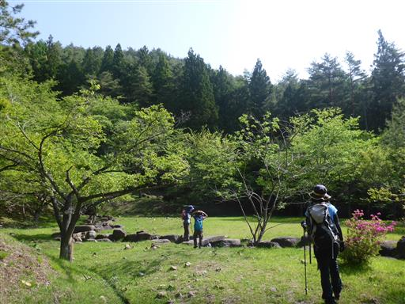
バス停。時刻表が無いので、もうここまでバスは来ないのだろう。
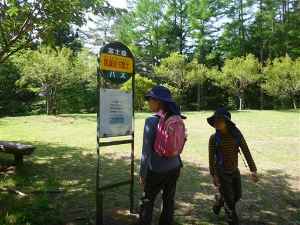
達磨石。
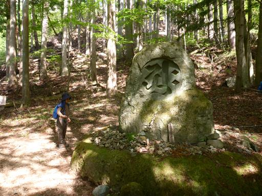
ヘビを発見。
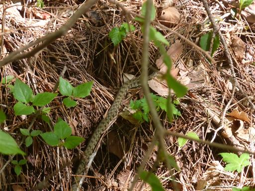
新緑が美しい登山道。
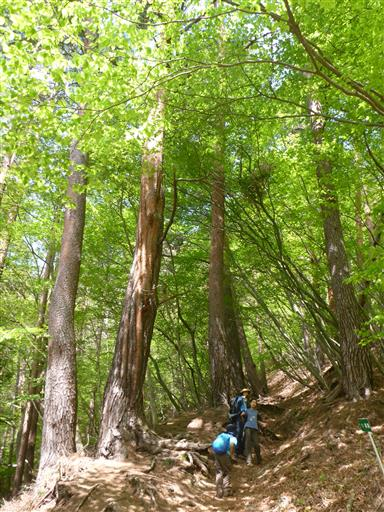
股のぞきに到着。
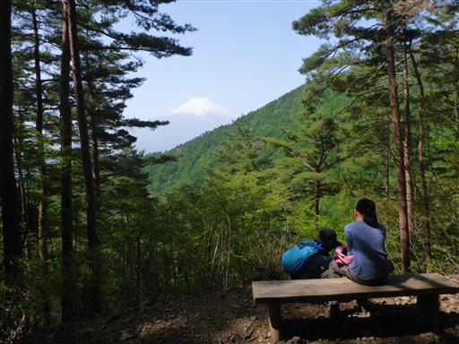
木の股の間から富士山が見えるという事のようだ。
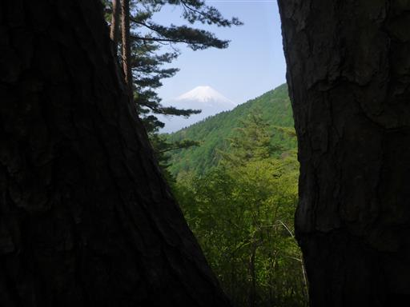
標高を上げていくと、だんだんと緑色が淡くなってくる。
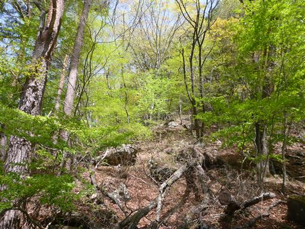
不二石。つっかえ棒が置かれている。
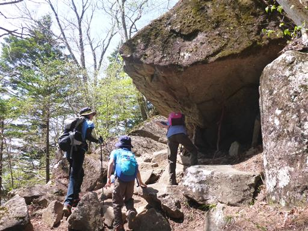
八十八大師に到着。台座やエプロンが前に来た時より整備されているように見える。
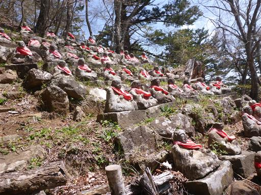
三ツ峠山の岩壁が見えてきた。
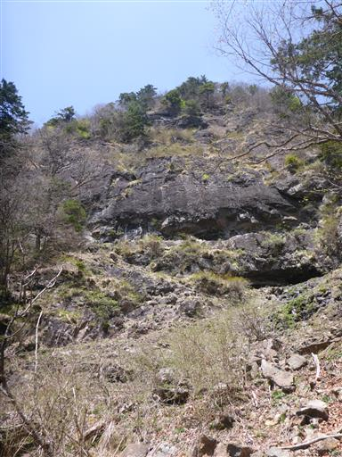
一字一石供養塔。大量の石が積まれている。
登山中に仲良くなった子連れ家族と一緒に登る。
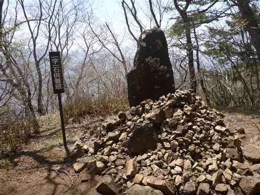
岩壁ではクライミングを楽しんでいる人を多く見かける。
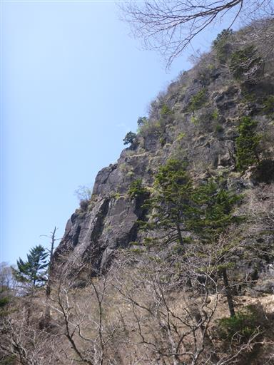
子供達も岩壁に少しだけ登ってみる。
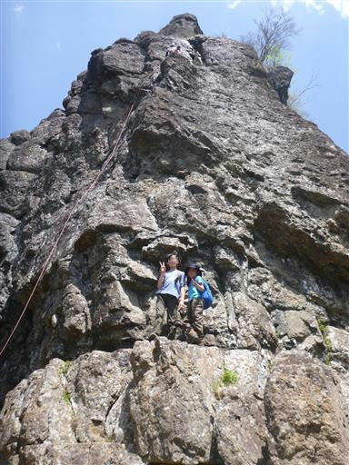
岩の基部を歩いていく。
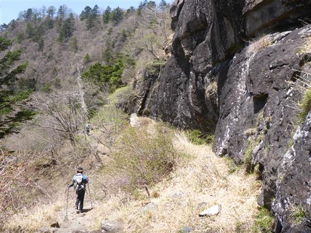
富士山がきれいに見えるが、結構霞んでいるのが残念だ。
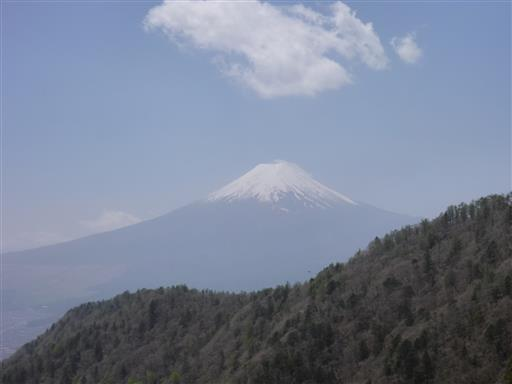
山頂に近くなり、少し人が増えてきた。
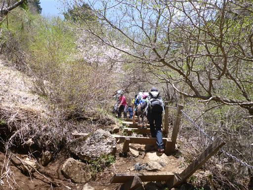
富士見荘は閉鎖されている。
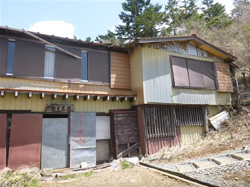
最後の一登り。以前はかなり滑りやすい登山道だったが、きれいに整備されている。
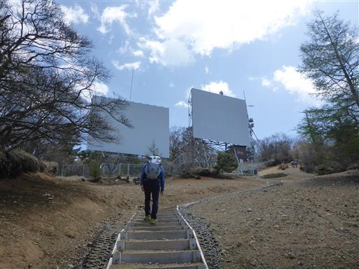
三ツ峠山山頂到着。標高1785m。
久々に集合写真を撮ってもらう。

黒岳をはじめとする御坂の山々。
晴れてはいるが霞が酷く、南アルプスなど遠望は全くない。
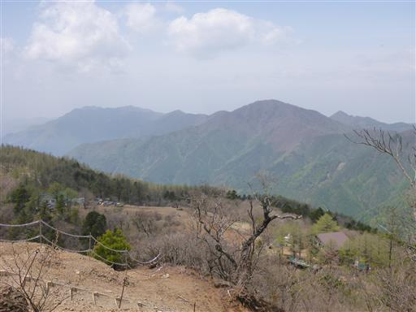
山頂は狭いので、山頂の下にある広場で昼食をとる。

山頂で昼食をとったら往路を戻る。
山で仲良くなった子と下ったのだが、終始テンションが高く、ハイペースで下ってきた。
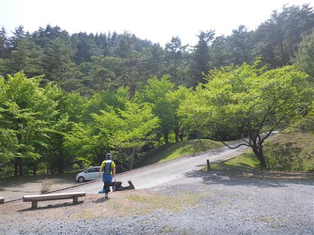
下山地点の小さな水流に大量のオタマジャクシを発見。
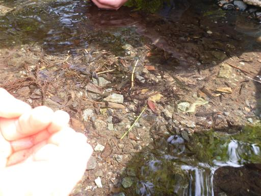
みんなでおたまじゃくし捕り。
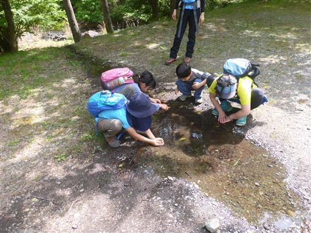
容易に捕まえられる。
今回は山で友達ができたのと、ヘビやトカゲやオタマジャクシを見られたので、
久々に子供達もすごく楽しめた登山だった。
山頂からの展望は霞んでいたが、人気の山をゆっくり楽しむことができた。
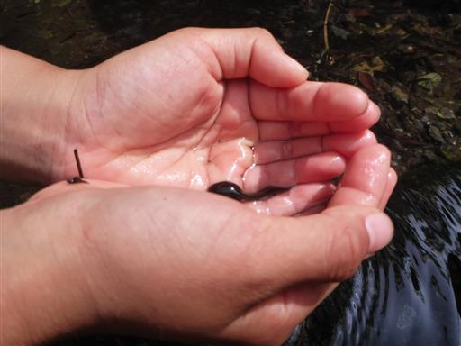